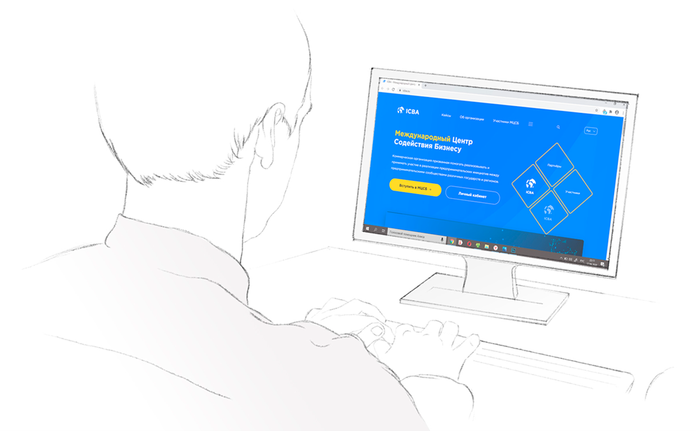

Международный Центр Содействия Бизнесу (ICBA) представляет проект минерал экспо 2020
Виртуальная выставка. Это виртуальная площадка с эффектом полного погружения, которая объединит продавцов и покупателей разных стран.
Практическая значимость решения
Деловые отношения1… Обмен актуальными мнениями2… Демонстрация достижений3… Общественные дискуссии4…
Все это происходит на выставках, ярмарках и форумах. Уже долгое время, выставки и ярмарки, являются тем местом, где самые передовые мысли реализуются в обычных предметах, самые передовые технологии можно увидеть в действии, пообщаться с профессионалами, познакомиться с единомышленниками, найти партнеров. А теперь представим себе, что этого всего нет… Не происходят выставки, нарушены контакты в деловой среде, с единомышленниками, партнерские отношения не получают требуемого развития.
Кажется это что-то из фантастических фильмов. Но… Как показывает жизнь, устоявшиеся форматы отношений могут быть легко нарушены. Распространение COVID-19 и меры, предпринятые правительствами для защиты населения, показали, что настало время использования технологических наработок для обеспечения непрерывности деловых и общественных отношений.

Проблемная ситуация
Запросы деловых кругов, форумы общественности требуют постоянных, в том числе и личных, коммуникаций. События, которые могут эти коммуникации нарушить, могут возникнуть неожиданно и на непредсказуемое время.
Важные для деловой и общественной жизни мероприятия, могут быть отменены по соображениям, имеющими более высокий приоритет. Как мы можем увидеть в 2020г. многие значимые мероприятия, такие как ежегодные выставки, форумы различных направлений, были отменены по распоряжениям правительственных органов.
Вследствии таких отмен ряд отраслей промышленности и услуг не смогли составить перспективных планов развития, понять динамику клиентских и партнерских отношений, что мы можем наблюдать на примере несостоявшегося Международного авиасалона Фарнборо (Франция) и несостоявшейся выставки-конференции по морским вооружениям DIMDEX 2020 (Катар).
Важные международные общественно-политические дискуссии, такие как Санкт Петербургский Экономический Форум, Азиатский Экономический Форум (г. Боао, КНР), были перенесенына неопределенный срок.
Учитывая темпы жизни в современном мире, перечисленное требует скорейшего решения.
Методы решения
Еще некоторое время назад, решения перечисленных вопросов являлись действительно большой проблемой, имели частичный характер и были затруднительны ввиду недостаточного развития современных технологий.
В настоящее время имея хорошо подготовленную технологическую базу, включая современные каналы коммуникаций 4G+, 5G, перспективный проект STARLINK, представляется реальным и возможным функционирование online площадки для стабильной работы деловых и общественных взаимодействий, неподвластной внешним факторам.
Таким решением является концепция ViEx — это программно-аппаратный комплекс, позволяющий участвовать в качестве экспонента или простого посетителя на выставках, изучать товары, а самое главное заключать сделки находясь в любом месте, где есть подключение к сети интернет.
ViEx позволяет установить online общение непосредственно с экспонентом так, как бы это было в обычной встрече на выставке. И даже если язык общения экспонента и посетителя различаются, технология ViEx позволяет использовать услуги переводчика так, как если бы этот переводчик был бы с вами рядом.
Провести приватные переговоры в защищенной виртуальной переговорной так же предусмотрено ViEx.
Презентации, доклады для широкой публики, возможны ввиде видеоконференций и вебинаров внутри ViEx, в предусмотренных специально для этого виртуальных конгресс-холлах и залах. Посредством ViEx так же возможно проведение самых разнообразных общественных дискуссий, форумов, мероприятий для профильных специалистов.
Технические аспекты
Международная выставка, ярмарка, форум в привычном Вам понимании, только не отходя от компьютера.Лучшие достижения игровой индустрии соединяются с прагматическим решением прикладных вопросов и проблем.
Взаимодействие реализовано в виртуальной среде ViEx, где предусмотрены такие же как в обычном понимании тематические павильоны, которые экспоненты могут арендовать или заказать персональные. Персональные стенды построены внутри ViEx в соответствии с предпочтениями и стилем экспонента. Гибкая настройка под задачу от типового стенда до многозального и многоэтажного.
Возможность создавать и использовать профильные залы под конкретные тематические мероприятия от выставок конкретных регионов до проведения конгрессов по экологии и климату.Детализация представляемого экспонентом товара или услуги реализуется с учетом современного подхода с применением всех доступных технологий, включая непосредственную связь с экспонентом в режиме видеозвонка с представлением, по требованию услуг переводчика. ViEx предусматривает наличие развитой системы внутренней навигации и справочной информации. Внешние посетители не смогут заблудится - их встретит виртуальный помошник и подскажет как найти то, что попадает в сферу их интересов.А еще ViEx это хорошая рекламная площадка, направленная на профильных участников и посетителей. Такого удобного размещения рекламных материалов различных форматов, включая 3D модели не смогут предоставить никакие другие решения.
Еще одним этапом развития ViEx является использование технологий смарт-контрактов и арбитража сделок, включая внутренние расчетные механизмы. Нельзя не упомянуть о том, что пространство ViEx является, так же как и обычные массовые мероприятия, хорошей площадкой для рекламодателей. Размещенную рекламу будут видеть все посетители ViEx.
Экономическо-организационые аспекты
Не секрет, что любое массовое внешнее мероприятие, требует от компании значительных ресурсов и затрат. Если традиционное выставочное-ярморочное мероприятие или проводимый форум происходят не в стране участника, что нередко бывает, то на подготовку стендов и выставочных площадей, перемещение образцов, затрачиваются довольно большие суммы. Следует добавить к этому издержки на организацию поездки.
Анализируя эти затраты, приходит понимание, что ViEx это тот инструмент, который при значительно большем охвате целевой аудитории, позволит иметь сокращение издержек. Направляя сэкономленные компанией средства, например, на цели рекламы и продвижения, суммарный эффект будут иметь весьма большой эффект, который в настоящее время невозможно оценить детально.
В деле организации общественных и/или отраслевых дискуссий эффект разумной экономии так же присутствует, однако к нему добавляется повышенная оперативность проведения высокоактуальных тематических мероприятий. Частично это подтверждено проводимыми в период пандемии онлайн совещаний, включая обсуждение международных повесток. Организовать межотраслевое, межстрановое взаимодействие внутри ViEx получится значительно быстрее.
Внешниий опыт
Частично попытки реализовать концепции, отдаленно напоминающие ViEx имели место и ранее. Но основным препятствием реализации такого рода проектов являлось недостаточная готовность технико-технологической базы и современных программно-аппаратных решений. В недавнем прошлом, устройства не позволяли иметь необходимую вычислительную мощность и пригодные для реализации каналы коммуникаций, прежде всего ограниченный по скорости и относительно дорогой мобильный трафик в недавнем прошлом. На текущее время каких либо существенных ограничений для использования ViEx, в современных персональных устройствах не содержится. Технические характеристики большинства современных гаджетов, спокойно позволяют использовать их для обсуждаемой задачи.
Еще одним существенным фактором препятствия развитию заложенных в ViEx идей являлась устоявшиеся привычки традиционной реализации выставок, ярмарок и форумов. Переломным моментом востребованности решений, заложенных в ViEx, стало понимание существования внешних обстоятельств, стратегически влияющих на возможности привычной использовать их для обсуждаемой задачи.
Еще одним существенным фактором препятствия развитию заложенных в ViEx идей являлась устоявшиеся привычки традиционной реализации выставок, ярмарок и форумов. Переломным моментом востребованности решений, заложенных в ViEx, стало понимание существования внешних обстоятельств, стратегически влияющих на возможности привычной и традиционной организации «выставочного уклада».

В период всеобщего снижения деловой активности, вследствие противодействия развитию заболеваемости COVID-19, множество мероприятий так или иначе имели попытки реализации в online режимах, преимущественно в формате видеоконференций, но общение в формате видеоконференций, показало множество ограничений. Это позволило сделать вывод, что идеи ViEx, будут более полно отвечать тем требованиям, которые ставятся бизнесом и обществом для полноценного online взаимодействия.
Основные точки проекта
Разработка базовой цифровой среды. Это та часть внутреннего интерфейса пользователя, в которой происходит навигация и создается необходимый сервис. В сущности, это та часть проекта, которая реализуется в виде игрового пространства с использованием графический и интерактивный достижений современной игровой индустрии.
-
Разработка пакетных решений для участников (стандартный стенд, баннеры).
-
Разработка индивидуальных решений (индивидуальные стенды, видео, доп. опции).
-
Разработка функционала вставки медийной рекламы в зависимости от региона показа.
-
Разработка портала для взаимодействия (личные кабинеты на icba).
 -
Конгресс холл.
-
Виртуальный помощник.
Целевой эффект
Практическая реализация концепции ViEx позволит участникам делового и общественного взаимодействия значительно повысить его эффективность.
В контексте проведения выставок иярмарок, среда ViEx позволит не только сократить время от идеи продукта до его полноценной презентации потенциальным партнерам и покупателям, использовать все возможности online общения в том числе и без языковых ограничений, но и позволит заключать непосредственные безопасные сделки на базе смарт-контрактов, просчитывать логистические цепи и учитывать особенности таможенного оформления при непосредственном перемещении товаров.
ViEx это непрерывные решения в выставочно-ярмарочной деятельности с учетом тематических, сезонных или постоянно действующих экспозиций. Решения ViEx не имеют территориальных ограничений и поэтому способны к привлечению существенно большего количества потенциальных участников и посетителей.
В своей деятельности ViEx опирается на тесное сотрудничество с ТПП различных стран и регионов, предпринимательскими объединениями, в том числе международными. Тем самым достигается большой охват потенциальных участников, для которых участие в проекте ViEx как экономически выгодно, так и быстрореализуемо.
В контексте проведения различного масштаба общественных дискуссий, ViEx, ввиду высокой, по сравнению с традиционными мероприятиями, оперативностью, позволит обсуждать текущие проблемы, производить обмен мнениями, собирать и объединять экспертные заключения со значительно более высокой эффективностью.
ViEx это логическое развитие «деловой вселенной», представленной Международным Центром Содействия Бизнесу, на межправкомиссии Россия- Турция в 2019 году.